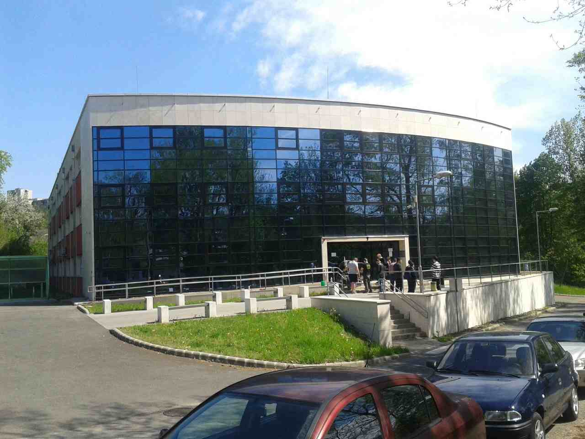

Adatbázisrendszerek
HTML 5 alapjai
Prezentáció készítés
Üdvüzlöm a weblapomon!
Ezt a weblapot a Számitógép architektúrák kurzuson készítettem el.
Forrás:
Farkas Csaba - Fodor Gábor Antal: Windows 10 és office 2016 középfokon.
Budapest: Jedlik Oktatási Stúdió, 2016.